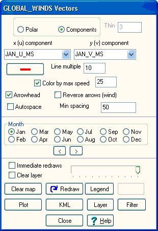

Use
map
toolbar icon and "Global monthly winds" option from the popup. This requires
"C:\mapdata\climate\global_winds_v2.dbf" which
will download automatically if you do not have it. The data originally
comes from NCEP/NCAR Reanalysis winds.
Use
map
toolbar icon and "Global monthly winds" option from the popup. This requires
"C:\mapdata\climate\global_winds_v2.dbf" which
will download automatically if you do not have it. The data originally
comes from NCEP/NCAR Reanalysis winds.
This data set will be best looking at a continent or ocean basin, but with the autospace option it will show something at global scale.
You can get this form with the Plot, Vector data option on the GIS table display window.
|
 |
Units are in meters per second, which are equal to 1.94 knots. Default setting should work. Use the Plot button, or check the month you want, to plot the wind vectors on the map. |
| NW Indian Ocean | |
 |
 |
| January winds | August winds |
 |
| Monthly wind stick or tadpole diagram. |
Monsoon summary, one of the visualizations possible with this data
NCEP/NCAR Reanalysis winds data set source
Last revision 1/27/2016